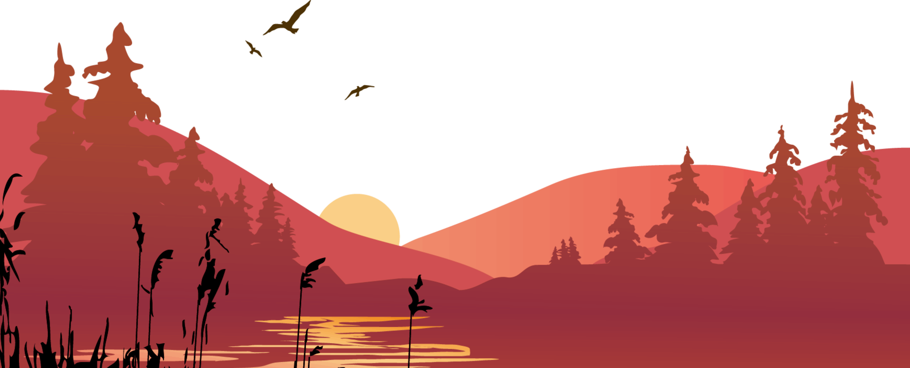

Harry
Es un mago de sangre mestiza y el único hijo de James y Lily Potter. Es la única persona conocida que ha sobrevivido a la maldición de Avada Kedavra,
Hermione
Es una bruja hija de muggles. El Sr. y Sra. Granger son dentistas en el mundo muggle. Posee una mente académica brillante, y demostró ser una estudiante superdotada.
Ron
s un mago sangre pura, el sexto y más joven hijo de Arthur y Molly Weasley. También era el hermano menor de Bill, Charlie, Percy, Fred y George, y el hermano mayor de Ginny. Ron y sus hermanos y hermana vivían en la Madriguera, en las afueras de Ottery St. Catchpole.
Albus
fue profesor de Transformaciones y más tarde director del Colegio Hogwarts de Magia y Hechicería. También se desempeñó como Jefe Supremo de la Confederación Internacional de Magos - (? - 1995) y como Jefe de Magos del Wizengamot (? - 1997)
Neville
s el actual profesor de Herbología del Colegio Hogwarts de Magia y Hechicería, al cual asistió desde 1991, y fue seleccionado para la Casa Gryffindor. Sus padres, Alice y Frank Longbottom, eran Aurores muy respetados y miembros de la primera Orden del Fénix
Luna
s una bruja, la única hija de Xenophilius y Pandora Lovegood. Su madre murió accidentalmente mientras experimentaba con hechizos cuando Luna tenía nueve años y fue criada por su padre, editor de la revista El Quisquilloso, en una casa similar a una torre de ajedrez gigantesca cerca del pueblo de Ottery St. Catchpole en Devon.
Ginny
Nacida el 11 de agosto de 1981 ocasionalmente conocido como 'Gin', era una bruja Sangre pura, la más joven de los siete hijos de Arthur y Molly Weasley, y la primera mujer en nacer en la línea Weasley durante varias generaciones.
Voldemort
Su hijo, Tom Ryddle, nació y fue criado en un orfanato muggle, aunque no tardó en ingresar al Colegio Hogwarts de Magia y Hechicería e incorporarse a la casa Slytherin en 1938. Tom Ryddle fue durante su vida temprana considerado el alumno más talentoso que jamás hubiera asistido a Hogwarts